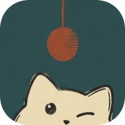
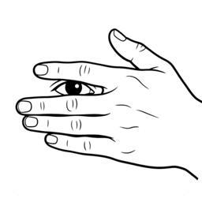
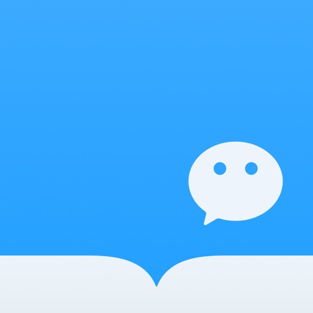
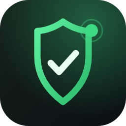

TokenPeek 瞄
账单喵懂
AI 的用量和花费，瞄一眼就够。统一统计 DeepSeek 官方多账号、OpenCode、Ollama 和自定义来源。
做点顺手的工具：macOS 小工具和 Obsidian 插件。免费、本地优先。

账单喵懂
AI 的用量和花费，瞄一眼就够。统一统计 DeepSeek 官方多账号、OpenCode、Ollama 和自定义来源。

世界好清静
更优雅的菜单栏隐藏工具：点一下收起，十秒后自己合上，需要时再展开。实用之外也可以很有意思——不看还看、无聊盒子、抓狂和混沌模式，随你玩。

随处可读，一处留痕
OmniBooks 是一个 Obsidian 插件：把苹果图书和微信读书的划线、想法与阅读记录收进同一个书架。AI 会先读懂你的阅读画像，再推荐书：一部分顺着你的口味，另一部分故意不顺着你，用来补上你现在看不到的方向。
世界在变，脉络可循
把每天的信息装订成一本可追溯的合订本。Obsidian 插件：信息溯源、每日日报、跟踪时间线与 AI 解读。跟踪话题会持续收进后续报道做成合订本。AI 不是通用问答，而是按证据链拆解事实、信源、矛盾与反方，还能直接把国外新闻翻译给你，一览知内外。

告别盲点放行
开源 MIT。Hammerspoon 插件（Spoon），配合 LuLu 防火墙用：弹窗问「这个连接放不放行」时，读取弹窗里的进程、路径、签名和目标地址，用三行字说明来历、意图和建议。只读，不改规则；Key 存钥匙串；也能换成本地模型，完全离线。
github.com/0xTack · 源代码、Issue 和 Release 都在这里。
如果这些小工具有帮到你，可以在 爱发电 请我喝杯咖啡。完全自愿，不换取任何功能或服务。